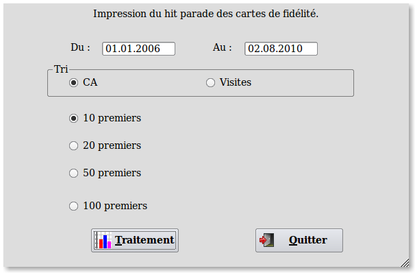

~ Laurux.Pos ~

~ Laurux.Pos ~ |
|
|
|
Hit parades des cartes de fidélités.
Le menu des cartes de fidélités offre la
possibilité de visualiser un hit parade des ventes pour les 10, 20, 50 ou 100 premières cartes.

----------------------------------------------------------------------------------------------------------------------